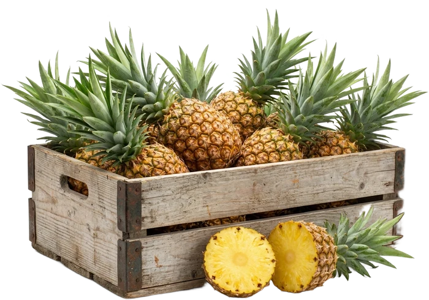
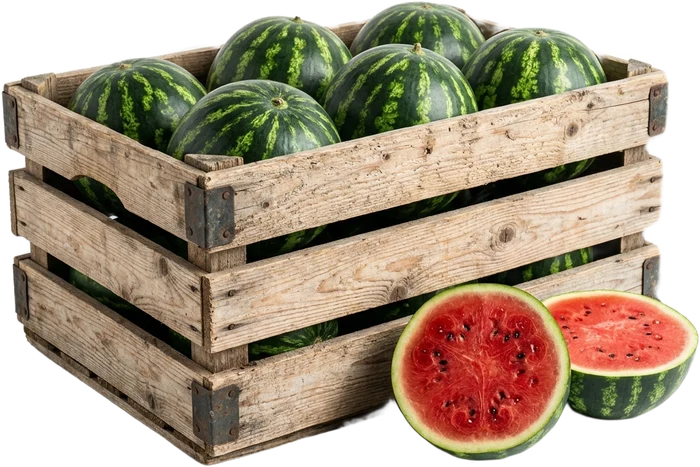
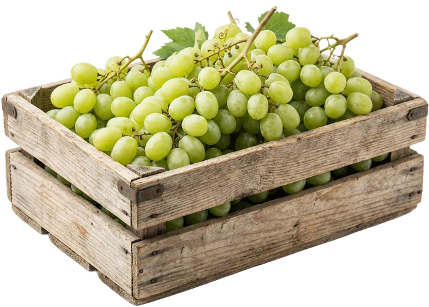
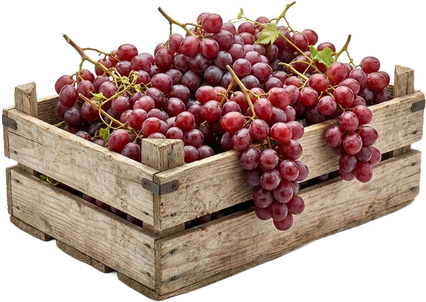
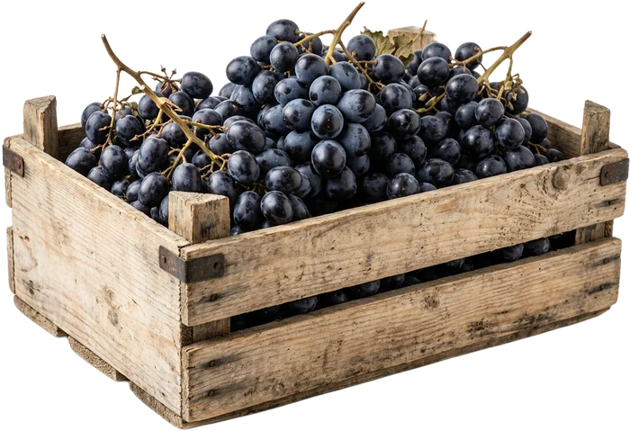

Meet the harvest.
Before the cold chain begins, meet the fruit and vegetables selected from our certified Brazilian growing partners.
01 / 14 · Scroll to exploreSwipe through → Terra FrescaGlobal Produce Trading
Work with us
Terra FrescaGlobal Produce Trading
Work with us
Fruits and vegetables sourced direct from certified Brazilian growers — packed at origin, shipped in our cold chain, and delivered fresh to any port in the world by one accountable team.
Terra Fresca Trading is a produce trading house, not a carrier. We buy fruit and vegetables directly from certified Brazilian growers, take ownership of every container, run the cold chain and the paperwork ourselves, and sell wholesale to importers, distributors, and retail chains anywhere in the world — one seller, one invoice, one accountable team.
Before the cold chain begins, meet the fruit and vegetables selected from our certified Brazilian growing partners.
01 / 14 · Scroll to exploreSwipe through →
Tommy Atkins · Palmer · Keitt
Peak window · Sep–Dec

Persian lime · calibrated and export packed
Availability · Year-round

Formosa · Golden
Availability · Year-round

Amarelo · Galia
Peak window · Aug–Mar

Hass · Breda
Peak window · Mar–Sep

Fresh root · export graded
Peak window · Jun–Nov

Beauregard · cured and export packed
Availability · Year-round

Maracujá azedo
Availability · Year-round

Pérola · Smooth Cayenne
Availability · Year-round

Crimson Sweet · Manchester
Peak window · Sep–Mar

Seedless · Sugraone · Thompson
Peak window · Oct–Dec

Seedless · Crimson · Flame
Peak window · Oct–Dec

Seedless · Midnight Beauty · Autumn Royal
Peak window · Oct–Dec
Prata · Nanica
Availability · Year-round
The portfolio becomes one accountable journey. All fourteen lines, and the same crates move directly into the loading scene.
One container remains in view from the packing floor to the vessel.
Terra Fresca buys the fruit at the farm gate and owns the box from this lift onward — so the grower is paid and the buyer has one counterparty, not a chain of them.


Direct from certified growers in Bahia, Ceará, and the São Francisco Valley — graded, pre-cooled, and packed at origin.
Reefer set-point and pulp temperature logged continuously from the farm gate to the port of discharge.
Weekly reefer capacity out of Santos, Itajaí, Pecém, and Natal — plus same-week air lift via GRU for delicate fruit.
MAPA phytosanitary certificates, destination compliance, and door delivery through one accountable team.


The same sealed reefer is tracked continuously from the packhouse to the berth.
Position and temperature remain visible while the landscape moves beneath it.


Air lift out of GRU for the fruit that cannot wait for a vessel.
Terra Fresca buys at the farm gate and takes ownership of every container it moves. The grower is paid for the fruit. The importer buys from one seller. Nobody in between is guessing at quality, price, or timing.
Terra Fresca was built by Daniel and Edgard — one side in Brazil among the growers, packhouses and ports, one side in the United States with the buyers. Every shipment still passes through those same two pairs of hands.
Sourcing, pre-cooling, packing, reefer booking, MAPA phytosanitary paperwork and destination compliance all sit with the same team. One point of contact from the grove to your door — and one company answerable for it.
“The pulp temperature log arrives before I even ask for it. In fifteen years buying Brazilian mango, nobody gave me that visibility.”
“One contact, one invoice, and the limes land in Jebel Ali on the day they said. That is all I ever wanted from an exporter.”
“Papaya is unforgiving. Their air-freight program got us shelf-ready fruit with days of life to spare — week after week.”
Grown across Bahia, Ceará, Rio Grande do Norte, and the São Francisco Valley — the widest tropical calendar in the southern hemisphere.